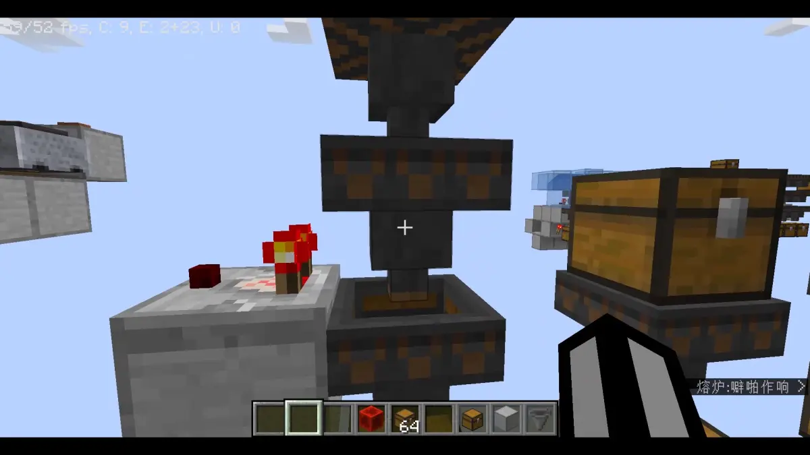
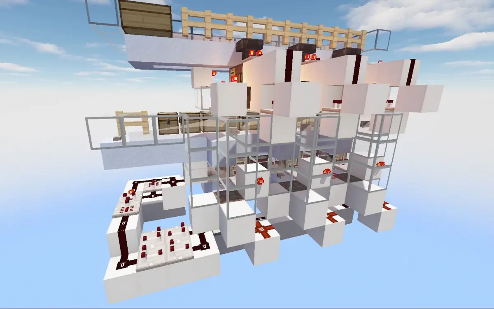
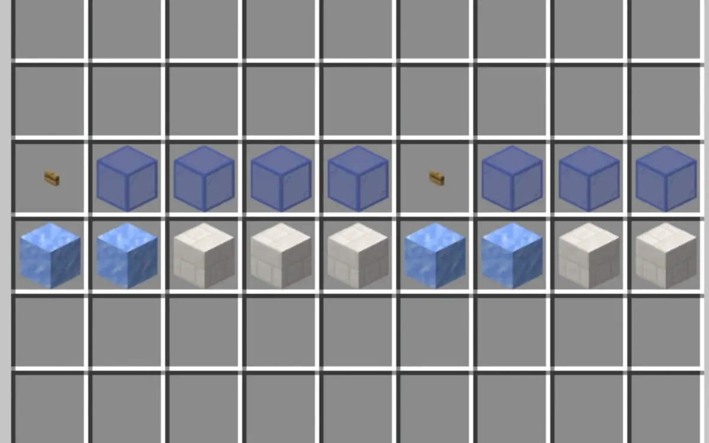
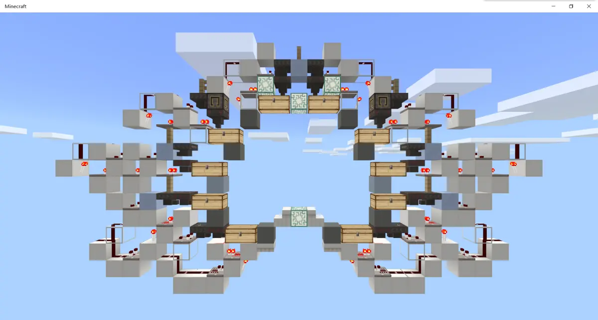
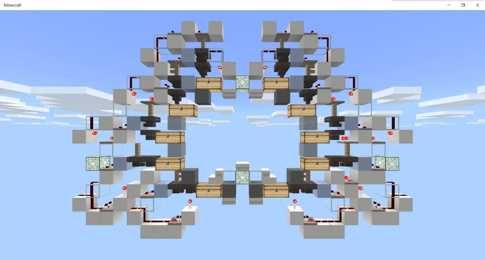

MCBE 【全物品】 浅谈全物品 ep.3 全物品的组成
写在前头（感谢）
这篇文章是面向对全物品有一定理解，打算动手做却还没有开始设计的人的，并非是面向零基础的
对于全物品所大量应用的双漏斗分类的原理，这里推荐 @smart_cuber 的视频。视频中展示的大部分分类单元在be都可以使用

【minecraft红石扫盲】物品分类竟然有这么多知识点 B 站视频 »本文参考了 @flag易 于2016年在百度帖吧发表的帖子《全物品自动分类机的设计》（链接：https://tieba.baidu.com/p/4920562733）感谢 @flag易 的这篇帖子，给刚入生电的我极大的启蒙
因为现在有较多的物品的设计资料（包括je的和be的），以及前人留下了的全物品单片设计。所以本文的侧重点是从卡顿这一点来说的
在这里感谢 @_hhhxiao 开发的 trapdoor 插件，可以精确地测量出服务器内的卡顿
 [MCBE] 1.16~1.18服务插件Trapdoor介绍与教程
B 站视频 »
[MCBE] 1.16~1.18服务插件Trapdoor介绍与教程
B 站视频 »
本文是由我和同为天火的服务器成员 @Maple_枫槭 共同撰写的。由我负责主要内容，@Maple_枫槭 负责技术指导
（这里打一波广告，天火服务器交流群：1029028772）
本文大体会分为四部分，从“绪论”、“卡顿”、“全物品的组成”、“水道的设计”来系统地阐述全物品的设计方向。由于专栏的表现能力有限，这里只讨论设计方向。具体的设计之后会以视频的方式放出
目录（在全文放出后会统一整理）
3、全物品的组成
3.1、全物品的组成
3.2、输入
3.2.1、防熊
3.2.2、不可堆叠分离
3.2.3、潜影盒拆包
3.2.4、输入倍速
3.2.5、预分类
3.3、水道
3.4、缓存
3.5、主控
3.6、单片
3.7、大宗物品分类
3.8、全物品的布局
3.9、附加功能
3.10、装修
3、第二章 全物品的组成
------------------------------
3.1、全物品的组成
全物品是由全物品单片为目标，将物品输入进全物品单片里分类单元组成的复杂系统
目标相当简单，但具体细化有大量需要考虑的地方以及大量的自由度
比方说全物品的布局，单片的选用，不可堆叠分离机的使用，缓存的使用等等等等……
让我们跟随物品流入的方向，一同细讲
------------------------------
3.2、输入
3.2.1、防熊
“独创技术，人员技术，人员素质什么的才能评判强服吧”——Maple_枫槭
大多数全物品是由中央水池开启，将物品投入其中，有的全物品会先经过一次防熊
物品分类单元常用41 1 1 1 1填充，需要在四格放置占位的物品。同时该物品不能是全物品分类的目标物品中的任何一个。所以常用命名物品进行填充，这样就不会和任何一种物品混合
但为防止有相同的命名物品进入水道破坏分类机，输入的物品会经过带有填充物的分类漏斗。如果有相同的命名物品经过将会被分类漏斗吸收并发出警告信号，同时将水道阻塞或转向至全物品的仓库，防止可能的占位物品进入全物品的分类水道
但由于填充物本身较难获得，且熊全物品的方法很多，而防熊只能防止这一种方法，所以本身的实用意义有待商榷
3.2.2、不可堆叠分离
因为全物品单片仅能分类可堆叠物品，所以不可堆叠物品就只能在循环水道里一圈一圈地转下去，徒增卡顿。所以大多数情况下在最开始经过一次不可堆叠分离可以有效将不可堆叠物品分离出去。有的全物品设计了“优先经过不可堆叠分离”和“优先经过循环水道”两种模式。我个人认为完全没有必要，首先实体卡顿过于严重，每一个物品完成循环水道一圈都会造成严重的卡顿。其次物品经过不可堆叠分离耗时极短，完全没有跳过不可堆叠分离的必要。反而先经过不可堆叠分离将不可堆叠物品分离出去来降低卡顿是有必要的
3.2.3、潜影盒拆包
潜影盒内有27个容量，如果让人工去手动拆盒也太不人性化了。所以利用盒子不能输入进盒子的特性将盒子分离，并通过高倍速的拆包输入进全物品水道
注意，盒子内的物品也有可能存在不可堆叠物品，所以需要过一次不可堆叠分离
3.2.4、输入倍速
倘若有多种物品同时进入分类漏斗范围内时，分类漏斗会不再吸取任何物品，导致分类漏斗失效。具体可以参考 @今日木木的林昕 的《基岩版最恶心的bug 一直在恶化从未被修复》
 基岩版最恶心的bug 一直在恶化从未被修复
B 站视频 »
基岩版最恶心的bug 一直在恶化从未被修复
B 站视频 »
而产生的原因这里不再细说了。这个恶性bug愈演愈烈，导致be传统的地狱分类收效甚微，同时也限定了be的分类仓库必须要将物品打散，逐个输入进水道才勉强能让be的漏斗分类正常工作
这样就限定了be输入物品只能以一个较低的速度输入进水道，要尽量让物品以打散的形态存在。如果以一个较高的物品速度输入进水道，那么相应的水道里物品密度就会增加，再加上投掷器投掷物品会有一个随机的初始速度和随机的初始方向，极易导致物品堆积在一起，更容易触发漏斗bug导致分类失败
所以常见的be全物品输入倍速不会超过四倍速
3.2.5、预分类

【mcbe】预分类机 提高10%~42%的全物品分类速度 B 站视频 »漏斗输出物品存在顺序性（指从漏斗依次输出第一格到第五格）和合并性（指在满足顺序性的情况下会尝试把同一种物品放在同一格）
如果我先后抛出A 、A、B、C、A各十余个，由于其顺序性和合并性会优先把A输入到水道里，然后依次将B和C输入到水道里
但是由于全物品所收纳的每种物品都有漏斗单倍速的分类能力，所以最理想的的输入是每种物品在打散的情况下每种物品都能以单倍速输入。所以预分类应运而生
自适应分类的分类漏斗只保留了一个空位，相应的同时只会吸收一种物品，依据这个就可以将物品按种类分离开来并以单倍速输入。不过若以高倍速输入会很容易堵塞多个漏斗，所以要依靠取样来锁住其他拿到相同物品模块
这里只是简要介绍了预分类的实现方法，具体实现可以等待预分类机的发布视频
------------------------------
3.3、水道
要减少物品在水道内的逗留时间，可以从物品的速度，水道的长度、以及最少的拐点这三点下手
蓝冰冰道相比浮冰冰道来说可以加快物品的通过速度，但蓝冰太贵了，需要一组零十七个冰才能合成一块。所以相应的，就有省冰的办法
四格水道有两格的关键冰，八格水道有四格的关键冰。在关键冰处放置蓝冰即可得到接近蓝冰的速度。具体可以参考 @Maple_枫槭 的《节省95.6%的冰--新型优化冰道》

[mcbe]节省95.6%的冰--新型优化冰道 B 站视频 »以lin佬五箱十漏斗单片为例，每一个单片都需要十格水道。那么相应的，每个能够挤下一个单片的地方都可以节省十格水道
常见的限位有海龟蛋限位、磨石限位、蜜块限位、箱子限位。其中蜜块限位和箱子限位后物品的位置不在箱子所在格上，而海龟蛋限位和磨石限位在海龟蛋和磨石所在格上。利用这一点可以做出最少的拐点。注意，磨石限位有方向性，请注意
这里只是简要地把水道的点进行了说明，具体的水道分析将会在“水道的设计”这一章放出
------------------------------
3.4、缓存
由于全物品的水道通常在四分钟左右，而物品消失的时间在五分钟。所以正常来说物品在水道内仅能分类一次。而大多数全物品都采用循环水道，即希望物品在水道内可以进行多次循环分类。所以缓存应运而生
物品被漏斗再次吸取并通过投掷器投出，掉落物的cd就会被重置，从而可以进行更多次的循环分类
缓存通常会修在水道的末端，直连水道的出发点。所以缓存和输入都在争夺水道的出发点。而协调缓存和输入的就是全物品的主控
------------------------------
3.5、主控
主控直接与水道的设计逻辑相关，这里不再细说。具体的请看“水道的设计”这一章
------------------------------
3.6、单片
这里从设计目标进行举例，我会在附录里放上部分我认为目前设计比较优秀的全物品单片
“看lin佬布线就跟看艺术品似的，高压、优雅。但可惜我看不懂艺术品”——叼叼的名字
全物品与其他生电机器最大的不同，是整台机器都要与玩家进行交互。而不像刷石机，需要与玩家交互的只有一根拉杆，一个状态指示灯，然后一个收集产物的大箱子。玩家在全物品需要寻找物品，需要打开箱子
那么作为一个人性化的设计，我们有三点需求：
一、win10玩家在生存模式下在一到两格宽的过道上可以够到两侧所有的箱子（ps：we玩家在生存模式下手会比pe玩家短一格）
二、每个箱子要至少完整地露出一格大小，方便够到
三、寻找物品视角不得仰角过大
这里展示了 @百里亦宸 设计的全物品单片，采用“完美五箱布局”，所有箱子均露出一格及以上，且寻找物品时无过大的仰角，并且可以让win10玩家在生存模式下都够到，算是经典箱子布局的范例

百里亦宸的完美五箱，每个淡灰色混凝土的位置都可以方块展示
而从抗卡顿的角度上，我们也有三点要求：
一、宽度要尽量的窄，这样可以减少大量的拐弯水道长度
二、所有物品管道采用冰道加速
三、更多的物品采用方块展示而不是展示框展示
这里展示了 @origin_0110 设计的全物品单片，高压缩度让该单片成为达成以上三点的最窄的单片之一，同时所有地方都预留了加速冰道，并且有三处可以采用方块展示而非展示框展示，是传统五箱全物品最经典的例子

linlin的布线真的百看不厌
------------------------------
3.7、大宗物品分类
箱盒物品会严重占用服务器和客户端的内存，造成严重卡顿。且由于全物品需要常加载的特点，该卡顿会一直保留在服务器内部，造成糟糕的游戏体验
可见 本文 2.3.2、(4) 箱子
全物品在回收工地垃圾时，难免会遇上大量同种物品的输入，如空置域里的石头。这时候一箱的储量有些捉襟见肘了，我们就需要仓库来进行储存
如果说全物品只有一箱储量的话，那放一排也只有七八个箱子的储量，完全称不上仓库一词。但潜影盒和箱子的套娃可以将储量增加至二十七倍，就满足大部分工程之需了
常规的大宗物品分类包含了一个打包机，来将物品放入潜影盒；一排箱子存储，以存放打包好的潜影盒；以及一个潜影盒展示，提供不足一盒的少量物品需求
------------------------------
3.8、全物品的布局
以中央的输入水池为中心点，向周围发散，有着传统的“一向”、“二向”、“三向”、“四向”布局。发散的优势在于物品的输入点可以以最短的距离进入水道，降低掉落物实体的存在时间，减少卡顿
基于mc只渲染视角范围内的实体的特点，向数越多，方块实体和实体越会被分散，所渲染的方块实体和实体的数量也就越少，卡顿越低。但同时拐点也会随之增加，降低物品在水道内的时长，增加卡顿
并且更多的向会容易让人迷失方向，对于不熟悉物品分布的人需要找更多的地方，增加寻找物品的难度
现在常用的全物品布局是三向，是在卡顿和使用之间寻找的平衡
同时现在无论是基于装修的正方形布局，或者是H形布局等，是在美观面前对于卡顿的让步。个人来说并不推荐这种做法
------------------------------
3.9、附加功能
作为这样大型物品存储，完全可以做一些卡顿较低的附加功能来完成对材料的简单利用；或者依托于玩家的频繁出入，来修一些常用的小型机器；再或者依托于常加载，来完成一些需要长时间挂机的机器
常见附加功能：
不可堆叠分类——利用不可堆叠物品的特点来对部分不可堆叠物品进行分类
合成站——可以进行较大储量的物品的快速合成，或是复杂合成表的物品的辅助合成
小型熔炉组——可以进行快速烧炼，算是较为常用的机器之一
炼药机——可以进行辅助炼药，算是较为常用的机器之一
但全物品的卡顿过于严重，无论附加什么功能都是雪上加霜
------------------------------
3.10、装修
“一个好看的全物品绝对会让你有想要住在那的冲动”——flag易《全物品自动分类机的设计》
作为一个少有的，需要和玩家进行强交互的生电机器，非常需要好看的装修。在优雅的环境中寻找物品或许能让急躁的心得到稍许的抚慰
同时作为玩家需要经常使用的生电机器，耐看的装修绝对让玩家更加喜爱使用这台“物品回收站”
并且全物品需要所有方块进行装饰的特殊性也非常考验建筑师的水准
作为少量物品的仓库来说，明亮的光照能使体验更加舒适，同时也能防止刷怪
无论是从玩家的体验程度来说，抑或是机器的使用效果来说，装修都会是全物品必不可少的一环
写在最后（作者的碎碎念）
全物品大多数的红石技术都在输入端。防熊、不可堆叠分离、潜影盒分离、潜影盒拆包以及总控的计时器。可以说全物品分类速度的门槛全都在输入这一个集成模块上所展示
装修也是重中之重。玩家对全物品的喜爱可以增加全物品的使用次数，可以让全物品发挥更大的功效。当然这个是全物品的功能上来说的。而作为“全物品最重要”的功能——装13，更帅的全物品能更好地完成这一目标。这里安利一下 @替身禽兽老DH 的全物品装修方案
什么叫全物品啊（后仰） B 站视频 »已经帅到没边了有木有
不过我本人对于建筑一窍不通，所以文中的对于装修的描述有些匮乏，请见谅_(:з」∠)_